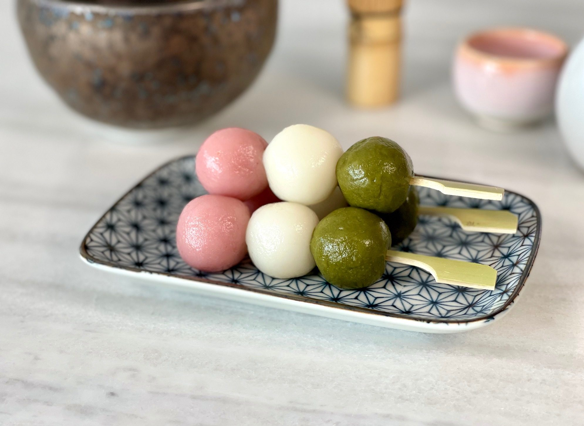

Tricolor Dango

Multicolored Mochi Balls!
Battling across the vast region of Inazuma, you finally reach the city. You happen upon a stall and ask for a sweet
treat to celebrate your arrival. The owner hands you a stick adorned with three pretty dango.
As you take a bite of the soft, chewy snack, you suddenly feel as though your body is instantly recovered. Here we will
teach you how to make this treat yourself so you will always have this restorative handy for your travels.
Ingredients
Makes approximately 12 servings
- 1 1/3 c non-glutinous rice flour
- 1 1/2 c glutinous rice flour
- 3/4 c powdered sugar optional
- 1 1/3 c hot water
- 1 tsp matcha powder + 1 tsp water
- 1 drop pink food coloring
Directions
- Soak 12 bamboo skewers in water
- Mix together non-glutinous rice flour and glutinous rice flour in a bowl.
Add powdered sugar to make dango sweeter.
- Add in hot water and mix with spoon. As dough begins to take shape, use your hands to mold it.
You may need to add more flour or more water to reach desired clay-like consistency.
- Divide dough into 3 even portions. Place each in its own bowl.
To Make Pink Dango
- Add one drop of pink food coloring to dough and work it in.
- Avoid adding additional coloring as it will darken as it cooks.
To Make Green Dango
- Make matcha paste by mixing together matcha powder with equal part of water.
- Once paste is formed, mix into dough.
To Make White Dango
- No additional steps are necessary.
- Divide each dough into 12 balls per color. If you have a kitchen scale handy, each ball should be close to 20 g.
- Boil a pot of water to cook the dango. Cook each color seperately to avoid staining the other dango.
Dango should be cooked in order of white, pink, green.
- After about 2 minutes, or once dango have risen to surface of water, take them out of the pot and immediately submerge
into an ice bath to stop the cooking process.
- Add dango to skewers in this order: green, white, pink.
- Pink: Pink sakura blossoms of the spring
- White: Snow melt of winter
- Green: Green grasses of summer